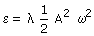
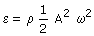
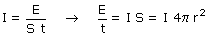

| Energía de una onda elástica
unidimensional  (J / m)
Se define intensidad de una onda unidimensional como la energía que transporta por unidad de tiempo. Vale: I = ε·c (W) Energía de onda elástica tridimensional  (J / m3)
Se define intensidad de una onda tridimensional como la energía que transporta por unidad de tiempo y unidad de superficie que atraviesa. Vale I = ε·c (J / (s·m2)) La energía que fluye por unidad de tiempo (Potencia) a través de una esfera de radio r con centro en el foco, vale:  |